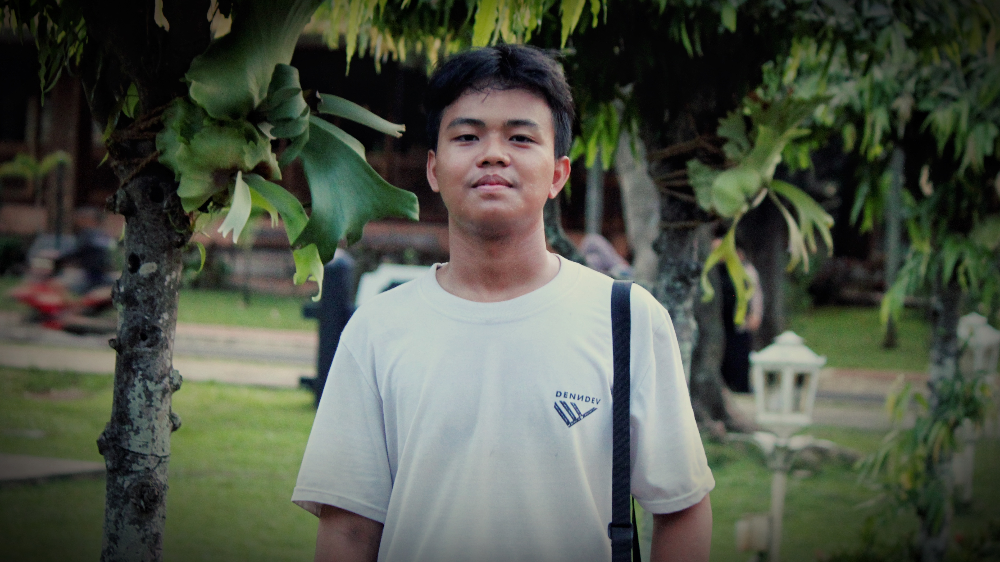

Mohamad Zidan lahir di Tangerang pada 11 Juli 2007. Sejak kecil, ia tumbuh dalam lingkungan yang penuh dengan semangat kemandirian. Di usia 6 tahun, ia sudah mulai belajar untuk mandiri karena kedua orang tuanya bekerja. Namun, hal itu tidak membuatnya merasa kesepian. Justru, ia tumbuh dengan jiwa yang kuat dan penuh motivasi untuk melakukan hal-hal positif. Lingkungannya yang nyaman semakin membentuk dirinya menjadi pribadi yang selalu bersemangat dalam setiap aktivitas yang ia jalani. Saat ini, Zidan bersekolah di SMK Mutiara Insan Nusantara, tempat yang juga menjadi bagian dari perjalanan pendidikannya sejak SMP. Sejak kecil, ia sudah memiliki ketertarikan terhadap dunia baris-berbaris. Kegemarannya dalam Pramuka saat sekolah dasar berlanjut hingga kini dengan menjadi bagian dari Paskibra, sebuah komunitas yang mengasah kedisiplinan dan kepemimpinannya. Tak hanya aktif dalam kegiatan ekstrakurikuler, Zidan juga memiliki rekam jejak yang luar biasa dalam organisasi. Sejak SMP, ia telah dipercaya sebagai Ketua OSIS. Saat memasuki SMK, ia melanjutkan langkahnya di organisasi dengan menjadi Wakil Ketua OSIS di kelas 10 dan Ketua OSIS di kelas 11. Selain itu, kecintaannya terhadap nilai-nilai spiritual membawanya untuk aktif di Rohis, di mana ia telah bergabung sejak SMP dan terus melanjutkannya selama dua tahun di SMK. Komitmen Zidan dalam berorganisasi tidak hanya sebatas di lingkungan sekolah. Ia juga terlibat dalam berbagai organisasi tingkat kecamatan dan provinsi, seperti Forum Anak Kecamatan Rajeg, Green Generation Provinsi Banten, serta Dewan Forum OSIS Kecamatan Dapil 5 Kabupaten Tangerang. Baginya, organisasi bukan hanya tempat untuk belajar kepemimpinan, tetapi juga sarana untuk menerapkan ilmu yang diperoleh ke lingkungan terdekatnya. Oleh karena itu, ia selalu berusaha untuk membawa perubahan positif bagi sekolahnya sendiri.
Di luar akademik dan organisasi, Zidan juga memiliki ketertarikan dalam bidang olahraga, terutama badminton. Di sela kesibukannya sebagai Ketua OSIS, ia tetap menyempatkan diri untuk mengembangkan minatnya dalam olahraga ini. Ketika berbicara tentang masa depan, Zidan memiliki pandangan yang luas. Ia selalu berharap yang terbaik dan memiliki ketertarikan terhadap profesi masinis. Baginya, dunia ini terlalu sempit untuk berhenti belajar. Ia percaya bahwa "Dunia terlalu sempit untuk kita berhenti belajar," sehingga ia terus mencari ilmu dan pengalaman baru dalam setiap langkah hidupnya. Sebagai pribadi yang terus berkembang, Zidan menjadikan namanya sebagai sebuah filosofi hidup. Dalam bahasa Arab, Zidan berarti "terus berkembang", dan ia berusaha untuk selalu menjadi pribadi yang lebih baik serta memberikan manfaat bagi orang-orang di sekitarnya. Pelajaran terbesar dalam hidupnya adalah bahwa manusia hanya bisa benar-benar sadar melalui dua hal: nasihat atau pengalaman pahit yang memberikan pelajaran berharga.
Dengan semangat dan dedikasi yang tinggi, Mohamad Zidan terus melangkah maju, membawa visi dan tekad yang kuat untuk menjadi sosok yang memberi dampak positif bagi sekitarnya. Ia bukan hanya sekadar pemimpin di organisasi, tetapi juga pemimpin bagi dirinya sendiri dalam menjalani kehidupan dengan penuh makna.

Belajar seperti kamera yang hidup untuk mengabadikan sesuatu yang berharga buat seseorang
Baca lebih lanjut...